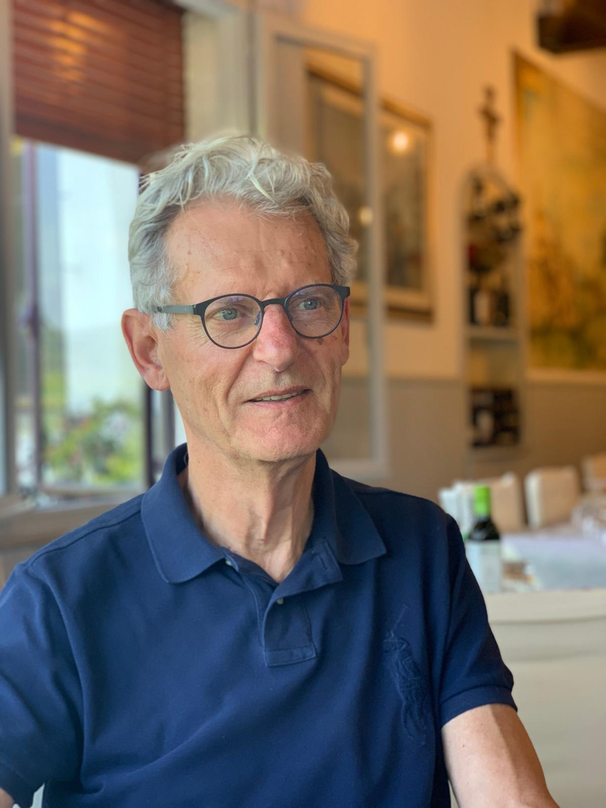
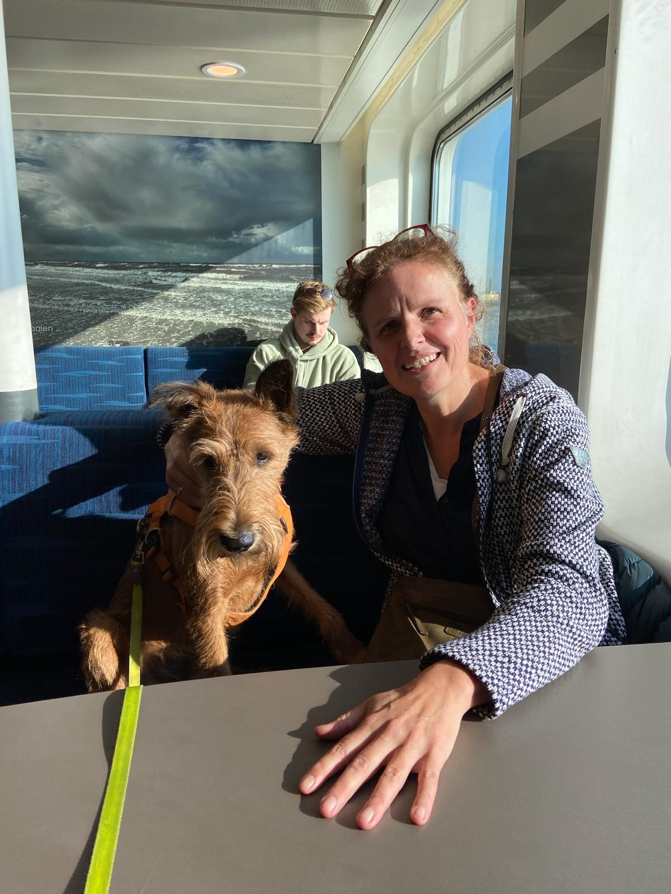

Zincafé Zweeloo
Gesprekken die ertoe doen
Gesprekken die ertoe doen
Kleinschalige filosofische gesprekken over zingeving — voor iedereen in en rondom Zweeloo, gratis, in De Kapschuur.
Bekijk de bijeenkomsten →Twee avonden over de grote vragen van de westerse filosofie. Van Aristoteles tot Žižek. Gratis, voor iedereen.
Meer over deze avonden →Sjoerd en Nathalie verschijnen binnenkort in de podcast van het Filosofiecafé Emmen. Meer details volgen.
Meer informatie →In een wereld die steeds sneller lijkt te draaien, is het waardevol om stil te staan bij vragen die er echt toe doen. Wat betekent het om 'goed' te leven? Hoe verhoud je je tot anderen, tot de tijd, tot jezelf?
Met dat idee startten we in Zweeloo het Zincafé — een reeks toegankelijke bijeenkomsten waarin we als dorpsgenoten in gesprek gaan over zingeving in de brede zin van het woord.
Sjoerd en Nathalie zijn verbonden aan het Instituut voor Toegepaste Filosofie, dat filosofie inzet als praktisch instrument — in organisaties, onderwijs en de samenleving.
Sjoerd en Nathalie verschijnen binnenkort als gast in de podcast van het Filosofiecafé Emmen. Ze gaan in gesprek over zingeving, filosofie in de praktijk en wat het betekent om in een kleine gemeenschap grote vragen te stellen.

Filosoof & Gespreksbegeleider
Sjoerd is bioloog en filosoof. Hij doceert aan de Hogeschool voor Toegepaste Filosofie (HTF) en is gespecialiseerd in toegepaste filosofie, bestuur en onderwijs. Hij is mede-auteur van de methode Leren Filosoferen.

Trainer & Gespreksbegeleider
Nathalie brengt rust en diepgang in gesprekken. Ze creëert een veilige ruimte waarin mensen zich durven uit te spreken.
We hadden twee parallelle groepen die hetzelfde programma doorliepen. Beide groepen bespraken dezelfde thema's op verschillende data. Het nieuwe seizoen volgt — houd deze pagina in de gaten!
Wil je meedoen met een volgende reeks, of heb je een vraag? Stuur ons een berichtje.
We horen graag van je!